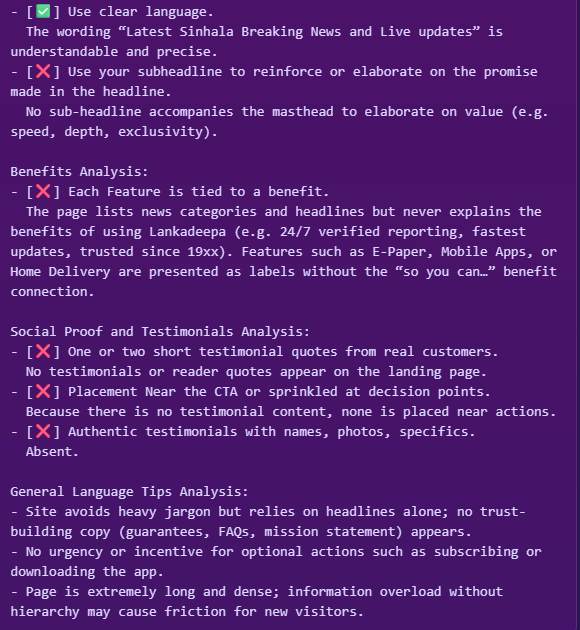
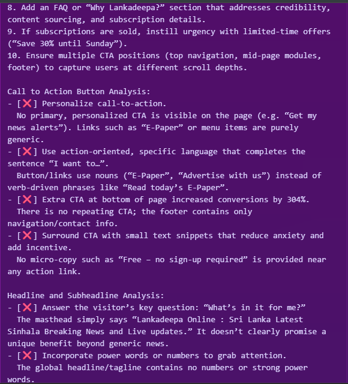
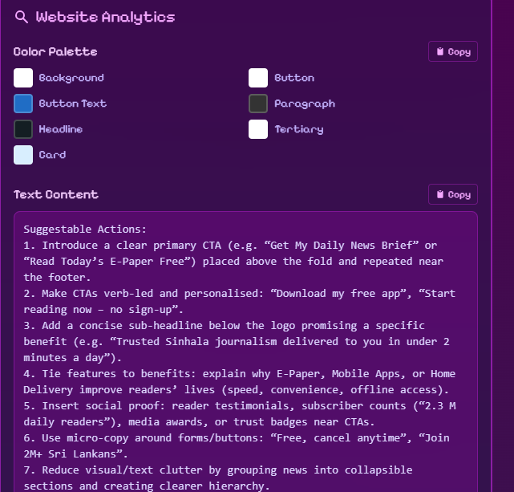

Introduction
This report presents a detailed analysis of the visual experience and user interface of Lankadeepa.lk, a prominent news website in Sri Lanka. The analysis was performed using ReimagineWeb, an AI-powered website feedback platform. Our goal is to identify key areas for improvement in design, accessibility, and user engagement based on the data provided by the tool.
1. Headline & Subheadline Analysis
The initial impression of a website is largely shaped by its main headline. ReimagineWeb's analysis pointed out several areas for improvement to grab user attention more effectively.
Key Finding: The headline is clear but lacks "power words" or specific numbers to create urgency or highlight unique benefits, failing to answer the user's key question: "What's in it for me?".
2. Website Copy & Content Analysis
The overall language, structure, and calls-to-action (CTAs) are critical for converting visitors. The analysis revealed issues with CTA clarity and information overload.
Key Finding: Call-to-action buttons use generic language (e.g., "E-Paper") instead of action-oriented phrases (e.g., "Read Today's E-Paper"). The page is also very dense, which can overwhelm new users.
3. Visual Analytics & Design Elements
ReimagineWeb provides an overview of the website's visual hierarchy and suggests actionable improvements to guide the user's eye and improve conversions.
Key Finding: The tool suggests adding clear, primary CTAs above the fold, personalizing content, and using social proof (like reader counts) to build trust and encourage action.
Summary & Recommendations
Based on the data from ReimagineWeb, here are our top 3 recommendations to improve Lankadeepa.lk's user experience:
- Refine Headlines and CTAs: Incorporate action-oriented language and specific benefits (e.g., "Get 24/7 Trusted News Instantly" instead of just the brand name).
- Improve Content Hierarchy: Reduce information density by using collapsible sections, cards, and more white space to guide the user through the content, preventing overwhelm.
- Add Social Proof: Integrate testimonials, subscriber counts, or trust badges near key action points to build credibility and encourage user engagement.